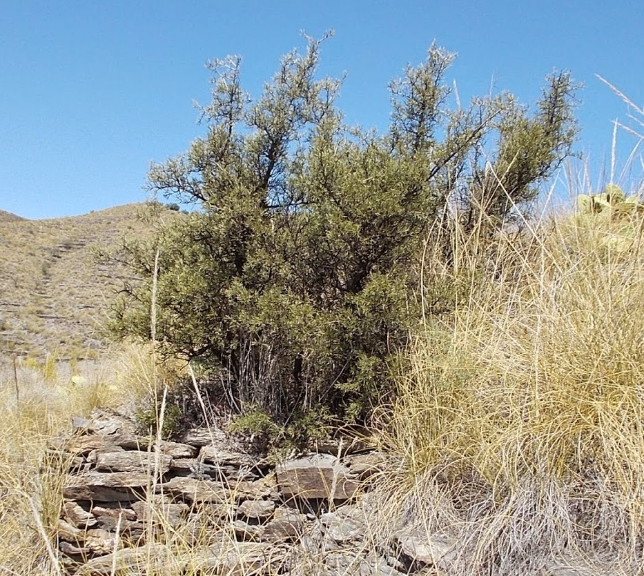

Ayuntamiento de Senés
JARDIN BOTANICO DE ESPECIES AUTOCTONAS DE SENES

Crataegus monogyna

El espino majuelo (Crataegus monogyna) es un arbusto o pequeño árbol caducifolio muy característico de zonas rurales y de matorral mediterráneo. Se distingue por su porte ramificado, la presencia de espinas y su abundante floración primaveral.
Puede alcanzar entre 2 y 6 metros de altura, formando setos naturales densos. Sus hojas son lobuladas y de color verde intenso, mientras que sus flores, pequeñas y blancas, aparecen en gran número, dando lugar posteriormente a frutos rojos conocidos como majuelos.
El espino majuelo se distribuye ampliamente por Europa, siendo común en zonas de clima templado. En el ámbito mediterráneo aparece en laderas, bordes de caminos, setos y zonas de transición entre bosque y matorral.
En la Sierra de los Filabres, puede encontrarse en zonas con cierta humedad relativa, formando parte del paisaje tradicional y contribuyendo a la diversidad del ecosistema.
El espino majuelo es conocido por sus propiedades medicinales, especialmente relacionadas con el sistema cardiovascular. Se ha utilizado tradicionalmente para mejorar la circulación, regular la presión arterial y favorecer la salud del corazón.
Sus flores y frutos contienen compuestos con efectos calmantes y antioxidantes, siendo empleados en infusiones y preparados naturales.
El espino majuelo ha sido considerado símbolo de protección y esperanza en diversas culturas. Sus flores blancas se han asociado con la pureza y el renacimiento de la primavera.
También representa la dualidad entre defensa y belleza, debido a la presencia de espinas junto a una floración abundante y delicada.
En Senés, el espino majuelo, se conoce como "Espino majoleto".
También ha sido valorado por sus propiedades medicinales, es buena para la hipertensión, arritmias, para relajar los músculos, antiespasmódico y problemas de nervios.
El espino majuelo florece en primavera, produciendo abundantes flores blancas que atraen a numerosos insectos polinizadores. Posteriormente, en otoño, aparecen sus característicos frutos rojos.
El espino majuelo es una planta muy importante para la fauna, ya que sus frutos sirven de alimento para numerosas especies de aves.
Tradicionalmente, se utilizaba para formar setos naturales que delimitaban terrenos, gracias a su densidad y a la presencia de espinas que dificultan el paso.